Predicting Student Dropout Rates: An Examination of Student Characteristics and Economic Indicators
This project aims to predict student dropout and academic success based on various student characteristics and academic indicators.
Data:
The dataset used in this project comes from Kaggle, https://www.kaggle.com/datasets/naveenkumar20bps1137/predict-students-dropout-and-academic-success?select=dataset.csv, detailing various aspects of a student’s personal background, academic performance, economic indicators, and more. To be more specific, the dataset includes variables such as marital status, nationality, parents’ qualifications and occupations, debtor status, age at enrollment, curricular units performance, among others. Additionally, it includes some economic indicators such as unemployment rate, inflation rate, and GDP, which provides a broader context to the student’s situation.
Motivation:
As a first-generation international student, I am deeply intrigued by how these diverse backgrounds may shape the academic outcomes of students in a broad sense. In addition to discerning any potential correlations between these student characteristics and dropout rates, I am also keen on creating a predictive model for students’ academic success.
Research Questions:
The main question this project seeks to address is: - “Can we predict whether a student will drop out or graduate based on their characteristics?”
Subsidiary questions include:
“Does a correlation exist between the likelihood of dropping out and certain academic attributes”
# install kaggle to use the api!pip install kaggle# set the api envimport os# Specify credentialsos.environ['KAGGLE_USERNAME'] ="constantinewang"# replace with your Kaggle usernameos.environ['KAGGLE_KEY'] ="965a8311015c3039e89e307e4cae5ee6"# replace with your Kaggle key
Requirement already satisfied: kaggle in /opt/conda/lib/python3.10/site-packages (1.5.16)
Requirement already satisfied: six>=1.10 in /opt/conda/lib/python3.10/site-packages (from kaggle) (1.16.0)
Requirement already satisfied: certifi in /opt/conda/lib/python3.10/site-packages (from kaggle) (2022.12.7)
Requirement already satisfied: python-dateutil in /opt/conda/lib/python3.10/site-packages (from kaggle) (2.8.2)
Requirement already satisfied: requests in /opt/conda/lib/python3.10/site-packages (from kaggle) (2.28.2)
Requirement already satisfied: tqdm in /opt/conda/lib/python3.10/site-packages (from kaggle) (4.65.0)
Requirement already satisfied: python-slugify in /opt/conda/lib/python3.10/site-packages (from kaggle) (8.0.1)
Requirement already satisfied: urllib3 in /opt/conda/lib/python3.10/site-packages (from kaggle) (1.26.14)
Requirement already satisfied: bleach in /opt/conda/lib/python3.10/site-packages (from kaggle) (6.0.0)
Requirement already satisfied: webencodings in /opt/conda/lib/python3.10/site-packages (from bleach->kaggle) (0.5.1)
Requirement already satisfied: text-unidecode>=1.3 in /opt/conda/lib/python3.10/site-packages (from python-slugify->kaggle) (1.3)
Requirement already satisfied: charset-normalizer<4,>=2 in /opt/conda/lib/python3.10/site-packages (from requests->kaggle) (3.0.1)
Requirement already satisfied: idna<4,>=2.5 in /opt/conda/lib/python3.10/site-packages (from requests->kaggle) (3.4)
Import data and summary statistics
import zipfileimport pandas as pdfrom kaggle.api.kaggle_api_extended import KaggleApi# Initialize the APIapi = KaggleApi()api.authenticate()#download datasetapi.dataset_download_files('naveenkumar20bps1137/predict-students-dropout-and-academic-success')#unzip the downloaded datasetwith zipfile.ZipFile('predict-students-dropout-and-academic-success.zip', 'r') as zip_ref: zip_ref.extractall()#load dataset into a pandas DataFramedf = pd.read_csv('dataset.csv')#dataset infoprint(df.info())
<class 'pandas.core.frame.DataFrame'>
RangeIndex: 4424 entries, 0 to 4423
Data columns (total 35 columns):
# Column Non-Null Count Dtype
--- ------ -------------- -----
0 Marital status 4424 non-null int64
1 Application mode 4424 non-null int64
2 Application order 4424 non-null int64
3 Course 4424 non-null int64
4 Daytime/evening attendance 4424 non-null int64
5 Previous qualification 4424 non-null int64
6 Nacionality 4424 non-null int64
7 Mother's qualification 4424 non-null int64
8 Father's qualification 4424 non-null int64
9 Mother's occupation 4424 non-null int64
10 Father's occupation 4424 non-null int64
11 Displaced 4424 non-null int64
12 Educational special needs 4424 non-null int64
13 Debtor 4424 non-null int64
14 Tuition fees up to date 4424 non-null int64
15 Gender 4424 non-null int64
16 Scholarship holder 4424 non-null int64
17 Age at enrollment 4424 non-null int64
18 International 4424 non-null int64
19 Curricular units 1st sem (credited) 4424 non-null int64
20 Curricular units 1st sem (enrolled) 4424 non-null int64
21 Curricular units 1st sem (evaluations) 4424 non-null int64
22 Curricular units 1st sem (approved) 4424 non-null int64
23 Curricular units 1st sem (grade) 4424 non-null float64
24 Curricular units 1st sem (without evaluations) 4424 non-null int64
25 Curricular units 2nd sem (credited) 4424 non-null int64
26 Curricular units 2nd sem (enrolled) 4424 non-null int64
27 Curricular units 2nd sem (evaluations) 4424 non-null int64
28 Curricular units 2nd sem (approved) 4424 non-null int64
29 Curricular units 2nd sem (grade) 4424 non-null float64
30 Curricular units 2nd sem (without evaluations) 4424 non-null int64
31 Unemployment rate 4424 non-null float64
32 Inflation rate 4424 non-null float64
33 GDP 4424 non-null float64
34 Target 4424 non-null object
dtypes: float64(5), int64(29), object(1)
memory usage: 1.2+ MB
None
Exploratory visualizations
import pandas as pdimport matplotlib.pyplot as pltfor column in df.columns:#for columns that are numeric type, we create hitogramif pd.api.types.is_numeric_dtype(df[column]): df[column].hist(bins=30) plt.title(column) plt.xlabel(column) plt.ylabel('Frequency') plt.grid(True) plt.show()#for columns that are categorical type, we create bar plotelse: df[column].value_counts().plot(kind='bar') plt.title(column) plt.xlabel(column) plt.ylabel('Count') plt.grid(True) plt.show()
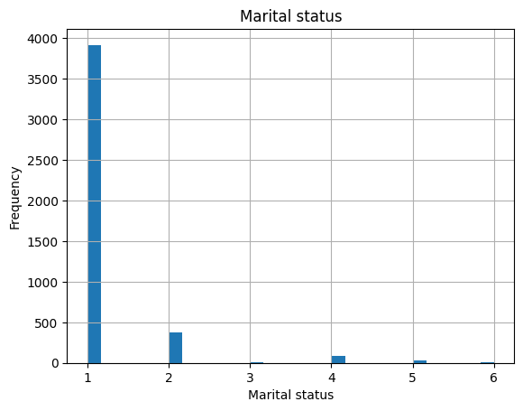
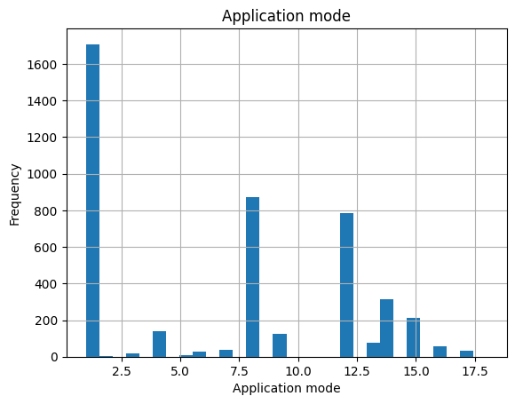
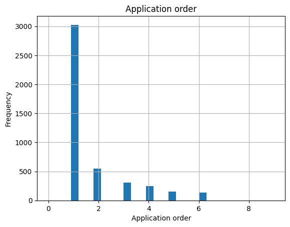
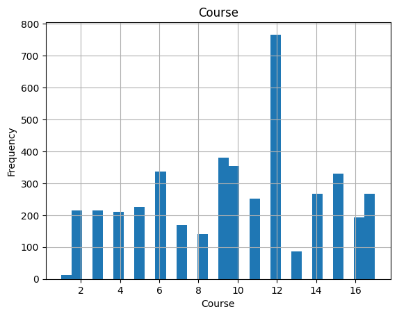
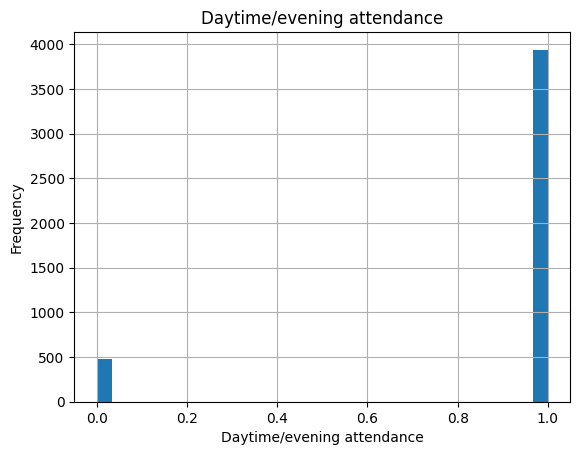
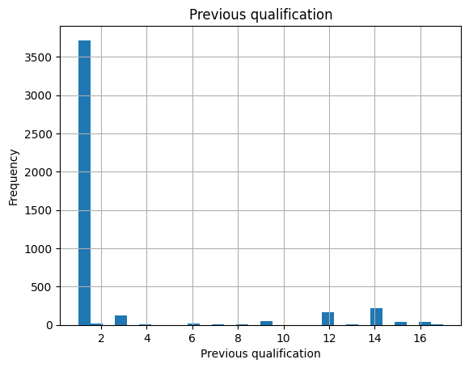
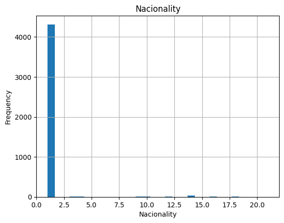
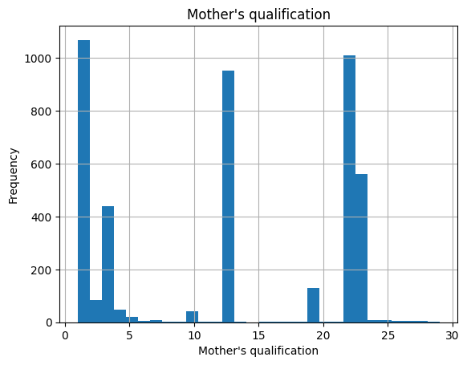
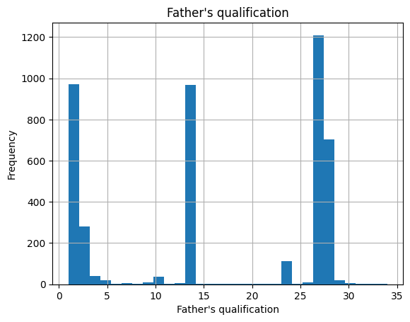
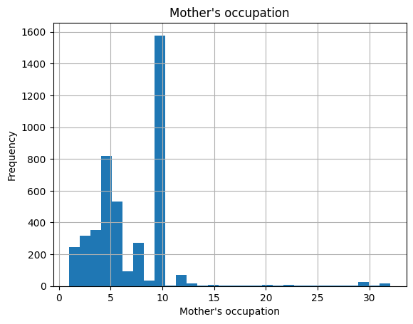
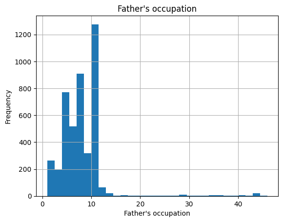
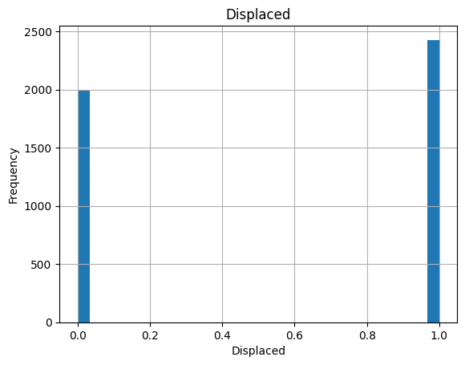
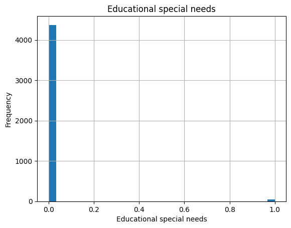
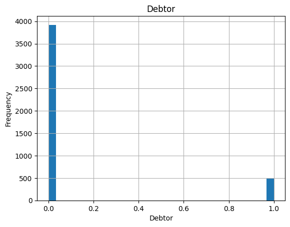
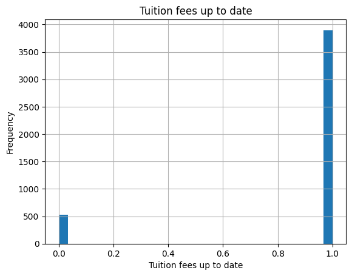
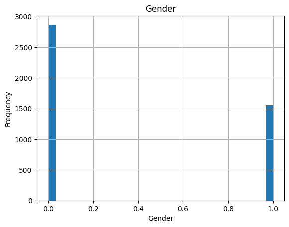
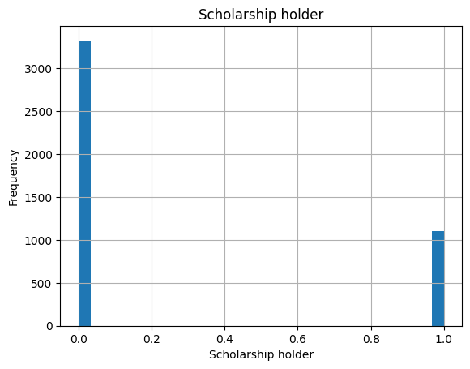
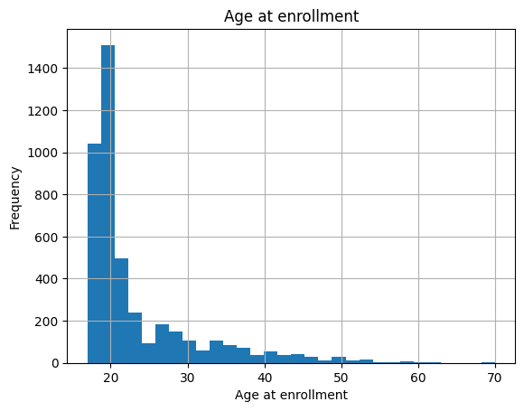
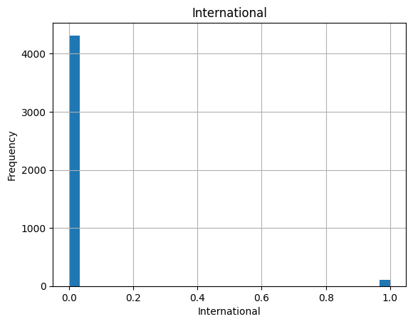
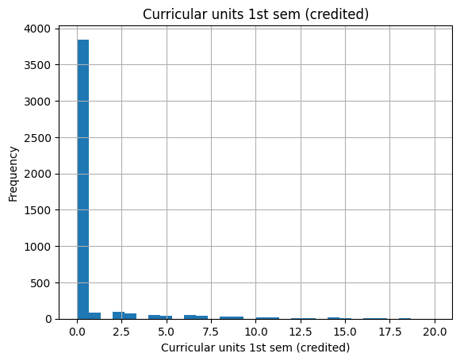
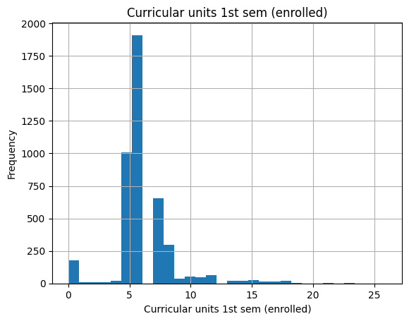
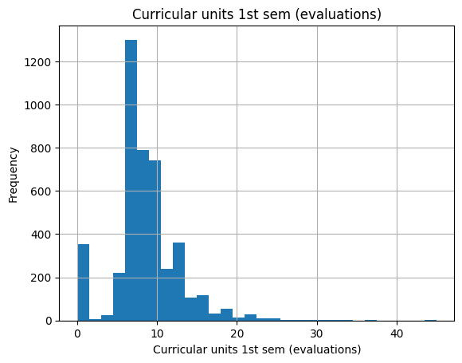
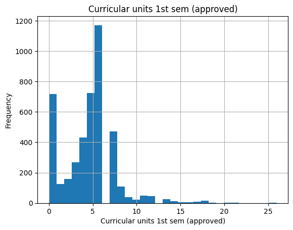
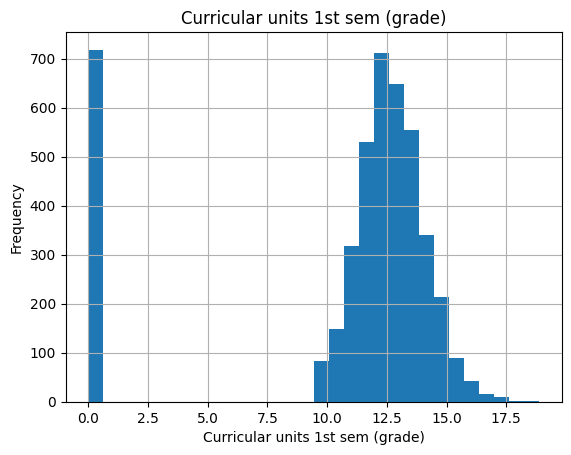
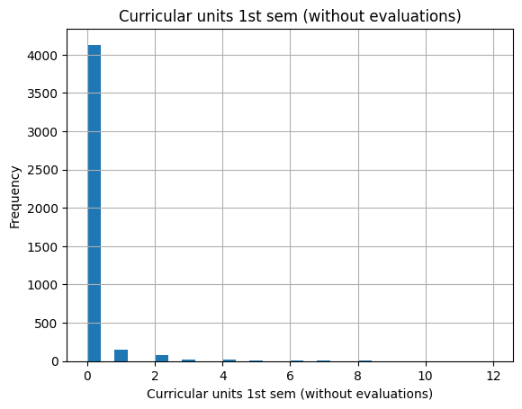
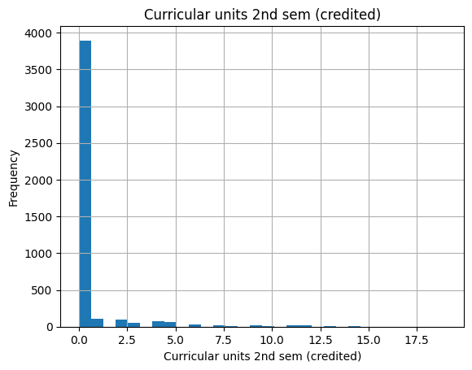
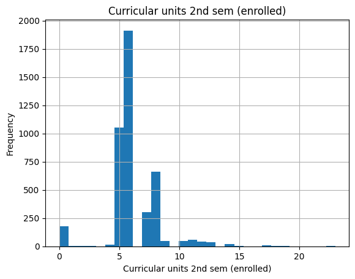
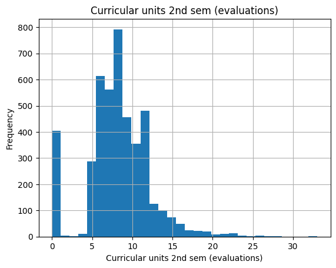
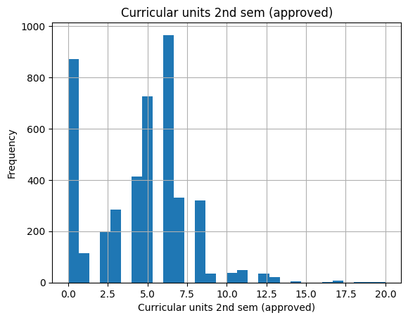
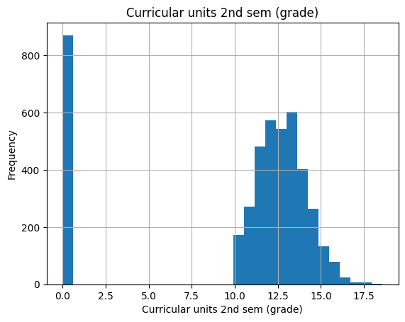
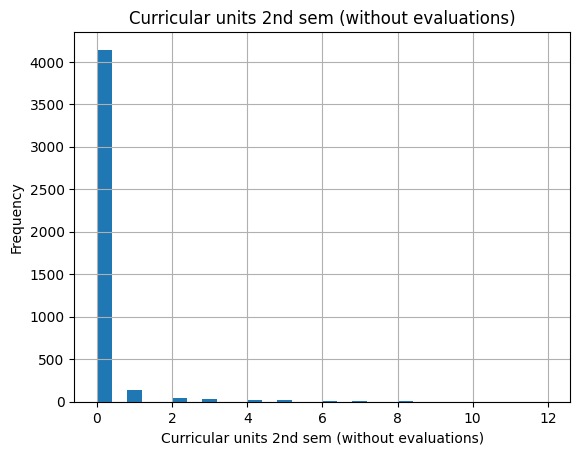
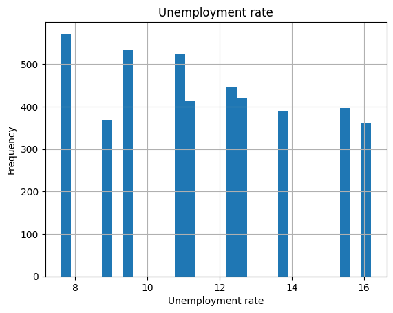
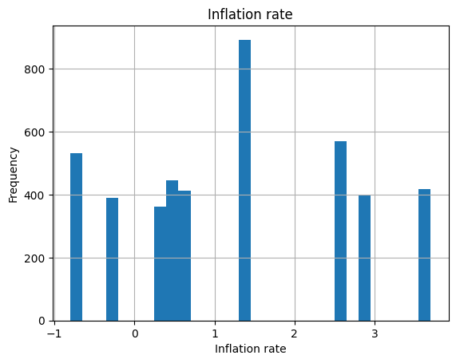
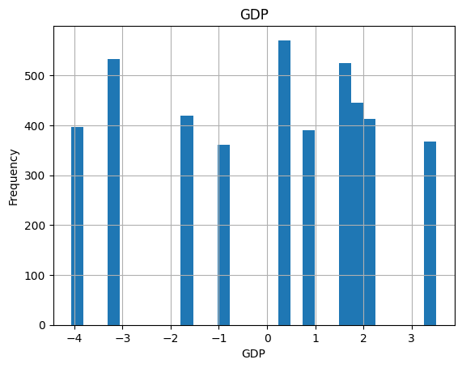
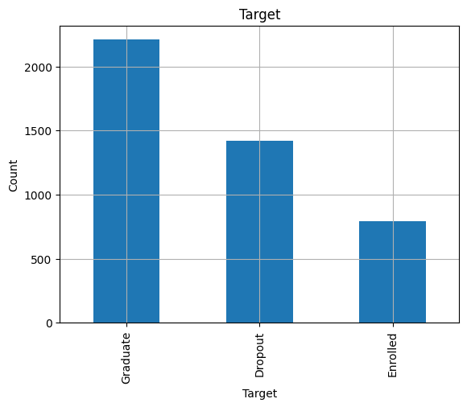
Clean the data before doing visualization
The dataset has already cut off null value and encode categorical columns.
# We do not need the record that is currently enrolleddf = df[df['Target'] !='Enrolled']print(df['Target'].unique())# cut off outliers that have a unusual agenumerical_cols = ['Age at enrollment',]for col in numerical_cols: Q1 = df[col].quantile(0.25) Q3 = df[col].quantile(0.75) IQR = Q3 - Q1#only keep rows in the dataframe that do not contain outliers df = df[~((df[col] < (Q1 -1.5* IQR)) | (df[col] > (Q3 +1.5* IQR)))]#check the new min maxprint("Min Age: ", df['Age at enrollment'].min())print("Max Age: ", df['Age at enrollment'].max())
['Dropout' 'Graduate']
Min Age: 17
Max Age: 34
Visualization 1: The relation between enrollment age and student status
Upon examining the visualizations, it becomes clear that the probability of successful graduation is notably higher for students who enroll at a younger age, This trend of increased successful graduations with lower enrollment age is particularly pronounced up to the age of 26. After age of 26 it becomes less distinct.
import matplotlib.pyplot as plt#Histogram of Age at enrollment with Student Statusdropout_age = df[df['Target'] =='Dropout']['Age at enrollment']graduate_age = df[df['Target'] =='Graduate']['Age at enrollment']plt.hist([dropout_age, graduate_age], label=['Dropout', 'Graduate'])plt.xlabel('Age at Enrollment')plt.ylabel('Count')plt.title('Age at Enrollment Distribution by Student Status')plt.legend()plt.show()#create bins for agesbins =range(df['Age at enrollment'].min(), df['Age at enrollment'].max()+1)# create a DataFrame for dropoutsdropout_df = df[df['Target'] =='Dropout']['Age at enrollment'].value_counts(bins=bins, sort=False).rename('Dropout')dropout_df /= df['Age at enrollment'].value_counts(bins=bins, sort=False)dropout_df *=100# percentage#create a DataFrame for graduatesgraduate_df = df[df['Target'] =='Graduate']['Age at enrollment'].value_counts(bins=bins, sort=False).rename('Graduate')graduate_df /= df['Age at enrollment'].value_counts(bins=bins, sort=False)graduate_df *=100# combine them into a single DataFramepercentage_df = pd.concat([dropout_df, graduate_df], axis=1)#create a bar plotpercentage_df.plot(kind='bar', stacked=True)plt.xlabel('Age at Enrollment')plt.ylabel('Percentage (%)')plt.title('Percentage of Dropout and Graduate Students by Age at Enrollment')plt.legend()plt.show()
Visualization 2: The relation between first semester grade and student status
Upon examining the box plot, it becomes clear that the probability of successful graduation is notably higher for students who have a better grade at first semester.
#Boxplot of 'Curricular units 1st sem (grade)' divided by Student Statusdropout_grade = df[df['Target']=='Dropout']['Curricular units 1st sem (grade)']graduate_grade = df[df['Target']=='Graduate']['Curricular units 1st sem (grade)']plt.boxplot([dropout_grade, graduate_grade], labels=['Dropout', 'Graduate'])plt.title('First Semester Grade Distribution by Student Status')plt.ylabel('First Semester Grade')plt.show()
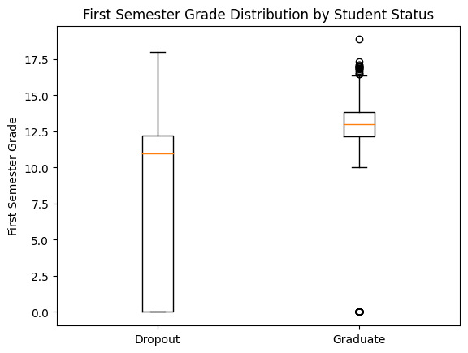
Visualization 3: The relation between Daytime/Evening Attendance and student status
Upon examining the box plot, it becomes clear that the probability of successful graduation is notably higher for students who attend classes at daytime.
#create a mapping dictionarymapping = {0: 'Evening', 1: 'Daytime'}#make a copy of the dataframe to not change the original onedf_copy = df.copy()df_copy['Daytime/evening attendance'] = df_copy['Daytime/evening attendance'].map(mapping)#create a grouped dataframegrouped_df = df_copy.groupby(['Daytime/evening attendance', 'Target']).size().unstack()#create a bar plotgrouped_df.plot(kind='bar', stacked=True)plt.title('Student Status by Daytime/Evening Attendance')plt.xlabel('Daytime/Evening Attendance')plt.ylabel('Count')plt.legend(title='Student Status')plt.show()#get percentagesgrouped_df = grouped_df.div(grouped_df.sum(axis=1), axis=0) *100#create a bar plotgrouped_df.plot(kind='bar', stacked=True)plt.title('Student Status by Daytime/Evening Attendance')plt.xlabel('Daytime/Evening Attendance')plt.ylabel('Percentage (%)')plt.legend(title='Student Status')plt.show()
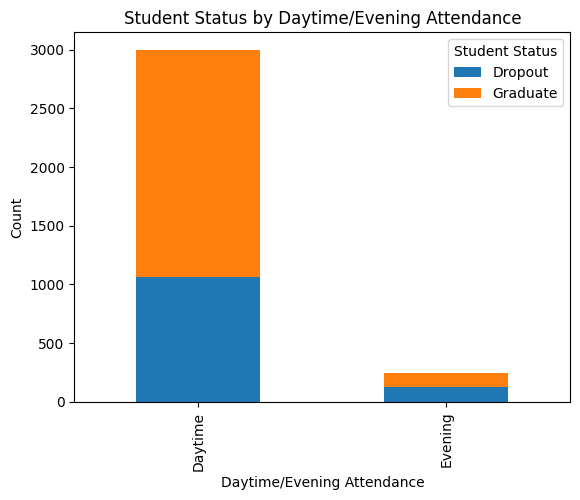
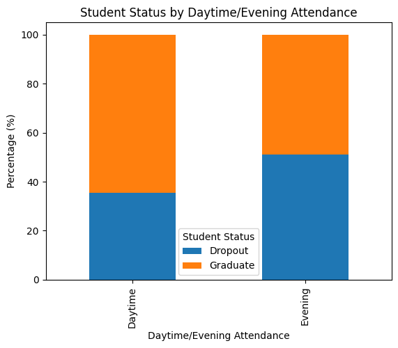
Visualization 4: The relation between marital status and student status
Upon analyzing the first chart, it’s evident that students with a single status demonstrate the highest rate of successful graduation. However, the second chart, which presents the overall distribution of marital statuses of population, reveals a substantial imbalance in the dataset, with single students comprising the majority. As such, the previously drawn conclusion that single students are most likely to graduate may be influenced by this imbalance.
#map the marital statusdef map_marital_status(status):if status ==1:return'Single'elif status ==2:return'Married'elif status ==3:return'Widower'elif status ==4:return'Divorced'elif status ==5:return'Facto Union'elif status ==6:return'Legally Separated'else:return'Other'#function to the Marital Status columndf_copy['Marital status'] = df_copy['Marital status'].apply(map_marital_status)#create a grouped dataframegrouped_df_marital = df_copy.groupby(['Marital status', 'Target']).size().unstack()#normalize to get percentages and multiply by 100grouped_df_marital = grouped_df_marital.div(grouped_df_marital.sum(axis=1), axis=0)*100#create a bar plotgrouped_df_marital.plot(kind='bar', stacked=True)plt.title('Student Status by Marital Status')plt.xlabel('Marital status')plt.ylabel('Percentage (%)')plt.legend(title='Student Status')plt.show()#first let's visualize the number of people of each marital statusdf_copy['Marital status'].value_counts().plot(kind='bar')plt.title('Population Distribution by Marital Status')plt.xlabel('Marital Status')plt.ylabel('Count')plt.show()